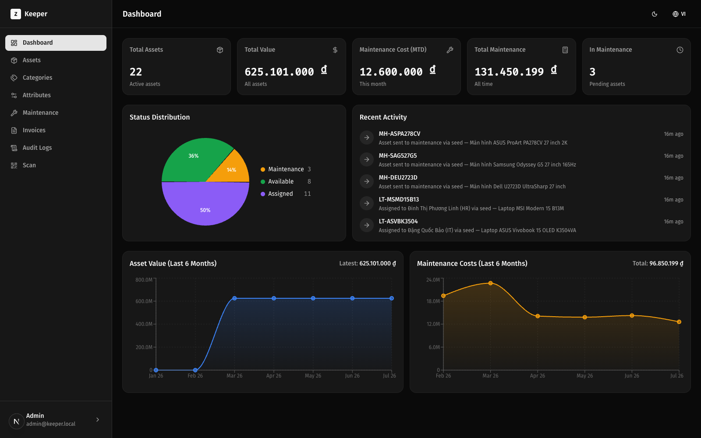

Centralized enterprise asset management that tracks the full lifecycle — from procurement to disposal — with an immutable event log, QR-powered operations, and AI invoice OCR. Hệ thống quản lý tài sản doanh nghiệp tập trung, theo dõi toàn bộ vòng đời — từ mua sắm đến thanh lý — với nhật ký sự kiện bất biến, vận hành bằng mã QR và OCR hóa đơn bằng AI.
Persona (MVP): AdminNgười dùng (MVP): Admin — a single role with full access: asset CRUD, assignment, maintenance, invoice OCR and dashboard. Multi-role RBAC is a designed post-MVP extension point. một vai trò duy nhất, toàn quyền: CRUD tài sản, cấp phát, bảo trì, OCR hóa đơn và dashboard. RBAC đa vai trò là hướng mở rộng sau MVP.
Click a card for implementation notes.Nhấn vào thẻ để xem ghi chú triển khai.
Create assets, QR generated automatically; printable 25×25mm labels.Tạo tài sản, QR sinh tự động; tem in 25×25mm.
qrcode 1.5.4 · ASSET-YYYYMMDD-XXXX
5 states; invalid transitions rejected at service layer.5 trạng thái; chặn chuyển trạng thái không hợp lệ ở tầng service.
lib/fsm.ts · validateTransition()
Hand assets to employees/departments, recall with full history.Giao tài sản cho nhân viên/phòng ban, thu hồi với lịch sử đầy đủ.
asset_events: ASSIGNED / RECALLED
Description, vendor, cost, result — realtime cost aggregation.Mô tả, nhà cung cấp, chi phí, kết quả — tổng hợp chi phí realtime.
maintenance_records · MTD ₫12.6M*
Every business action recorded via a single service-layer pattern.Mọi thao tác nghiệp vụ được ghi qua một pattern tầng service duy nhất.
logAssetEvent() · lib/audit-logger.ts
Total value, status distribution, 6-month maintenance cost trends.Tổng giá trị, phân bố trạng thái, xu hướng chi phí bảo trì 6 tháng.
Recharts 3.8 · <3s load target
Per-category custom fields, validated end-to-end.Trường tùy chỉnh theo danh mục, kiểm tra chặt chẽ.
PostgreSQL JSONB + Zod 4
Web scanner in the browser — no native app needed.Quét ngay trên web mobile — không cần cài app.
html5-qrcode 2.3.8 · /scan
Semi-auto extraction, bilingual VN/EN with Vietnamese priority.Trích xuất bán tự động, song ngữ Việt/Anh, ưu tiên tiếng Việt.
GPT-4o-mini · originals stored 1yrlưu ảnh gốc 1 năm
Captured from the running app at localhost:3000 — dark-mode native, bilingual VI/EN built in.Chụp từ ứng dụng đang chạy tại localhost:3000 — giao diện tối, song ngữ VI/EN tích hợp sẵn.

Read the KPIs and the recent-activity feed.Đọc KPI và luồng hoạt động gần đây.
Walk the Info / Attributes / Lifecycle Timeline tabs.Xem các tab Info / Attributes / Lifecycle Timeline.
The new event appears in the timeline and the audit log.Sự kiện mới hiện trong timeline và audit log.
Instant asset lookup from the printed 25×25mm label.Tra cứu tức thì từ tem in 25×25mm.
GPT-4o-mini pre-fills the asset draft from the photo.GPT-4o-mini điền sẵn bản nháp tài sản từ ảnh.
of new assets captured in the system (PRD target)tài sản mới được ghi nhận qua hệ thống (mục tiêu PRD)
assignment / recall log coveragethao tác cấp phát / thu hồi có log
reduction in allocation / recall operation timegiảm thời gian thao tác cấp phát / thu hồi
industry benchmark: audit time with scan-based verificationchuẩn ngành: thời gian kiểm kê với xác minh bằng quét mã [3]
of fixed-asset value silently drained by ghost assets — eliminated by event-logged trackinggiá trị tài sản cố định bị "tài sản ma" bào mòn — loại bỏ nhờ nhật ký sự kiện [4]
Single Admin role (no RBAC) · single location · no office-supply inventory · no depreciation engine · no ERP/HRM integration. Next: periodic inventory cycle, performance hardening, Vercel deployment. Backup provider not yet selected. Chỉ 1 vai trò Admin (chưa RBAC) · 1 địa điểm · chưa có kho văn phòng phẩm · chưa có khấu hao · chưa tích hợp ERP/HRM. Tiếp theo: kiểm kê định kỳ, tối ưu hiệu năng, triển khai Vercel. Chưa chọn nhà cung cấp backup.